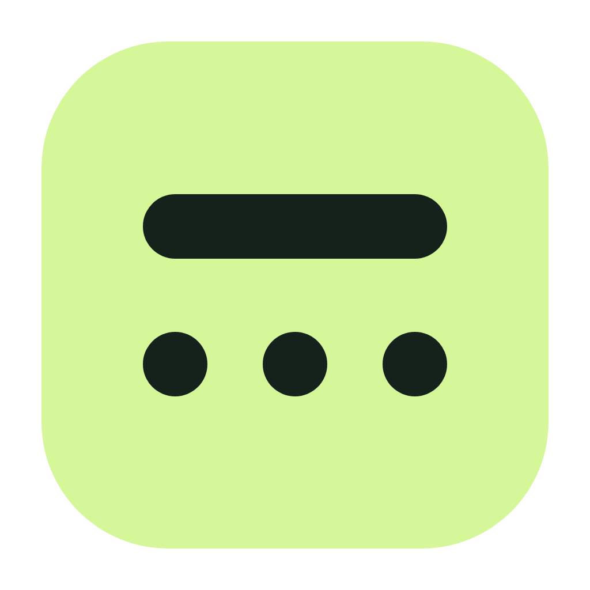

Morse for Mac 1.1.4
Offline listening and sending practice, with built-in paddle support and local progress.

MorseMorse code listening and sending practice for Mac and the web.
Offline listening and sending practice, with built-in paddle support and local progress.
For using the audio converter with the web trainer. The Mac trainer includes its own paddle engine.
Requires macOS 13 or later. Unzip the download and move the app into Applications.
These downloads use ad hoc signing. If macOS asks for approval, follow Apple’s instructions for opening the app.
For the separate browser companion, see the Morse Paddle guide.
Printed parts (OBJ) are included in the repository. The assembly PDF above covers the paddle, passive converter, wiring and checks. Test the converter before gluing the lid.